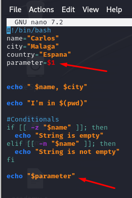
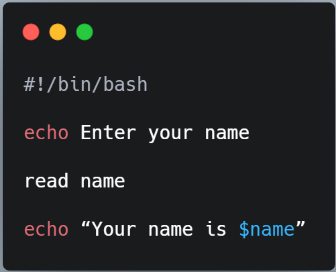

Tema 1: Introducción a Redes
Aquí se explican los conceptos básicos sobre redes, cómo funcionan que protocolos utilizan, etc ...
Aquí se explican los conceptos básicos sobre redes, cómo funcionan que protocolos utilizan, etc ...
Este tema cubre los protocolos de red más importantes y cómo se utilizan para proteger la comunicación...
Nmap (Network Mapper) es una herramienta de código abierto utilizada para el escaneo de redes y auditorías de seguridad. Es ampliamente utilizada por profesionales de seguridad para descubrir hosts y servicios en una red, creando un "mapa" de la misma.
La mayoría de las herramientas de escaneo tienen un tiempo de espera definido para recibir una respuesta del servicio. Si no hay respuesta en un tiempo específico, este servicio/puerto se marcará como cerrado, filtrado o desconocido. En los dos últimos casos, aún podemos trabajar con ello.
Sin embargo, si un puerto se marca como cerrado y Nmap no nos lo muestra, estaríamos en una situación desventajosa. Este servicio/puerto podría ofrecernos una oportunidad para acceder al sistema, pero encontrarlo puede llevar mucho tiempo innecesario.
Nmap ofrece varios tipos de escaneos que se pueden utilizar para obtener diferentes resultados sobre los objetivos. Aquí están las técnicas de escaneo más comunes:
| Modo de escaneo | Detalles |
|---|---|
| SYN (Half-open) - -sS | Envía paquetes SYN y espera respuestas SYN/ACK. Es más difícil de detectar. |
| Conexión TCP - -sT | Hace una conexión TCP completa con un handshake de tres pasos. Fácil de detectar. |
| Escaneo UDP - -sU | Envía paquetes UDP a los puertos objetivo. Es más lento y puede ser menos preciso. |
| Escaneo ACK - -sA | Envía paquetes ACK para determinar si los puertos están filtrados por un firewall. |
| Escaneo FIN - -sF | Envía paquetes FIN para evadir algunos sistemas de detección. Un puerto abierto no responderá. |
| Escaneo XMAS - -sX | Envía paquetes con las banderas FIN, PSH, y URG activadas. Similar al escaneo FIN. |
| Escaneo NULL - -sN | No envía banderas en el encabezado TCP. Un puerto cerrado responderá con un paquete RST. |
| Escaneo de Protocolo IP - -sO | Determina los protocolos IP soportados por el host objetivo enviando paquetes IP con diferentes números de protocolo. |
| Escaneo de Versiones - -sV | Intenta determinar la versión del servicio que se está ejecutando en los puertos abiertos. |
| Escaneo de Scripts (NSE) - -sC | Usa scripts de Nmap para realizar diversas tareas, como la detección de vulnerabilidades y enumeración de usuarios. |
| Escaneo Ping - -sn | Realiza un escaneo de ping para determinar qué hosts están activos en la red sin escanear puertos. |
| Escaneo en Redes IPv6 - -6 | Realiza escaneos en redes IPv6. |
| Escaneo de Servicios - -sV | Identifica servicios y versiones de software en los puertos abiertos. |
| Escaneo en Modo Agresivo - -A | Realiza detección del sistema operativo, escaneo de versiones, escaneo de scripts y traceroute. |
Cuando se necesita realizar una prueba de penetración interna para toda la red de una empresa, primero debemos obtener una visión general de qué sistemas están en línea para trabajar con ellos.
Para descubrir estos sistemas de manera activa en la red, podemos usar varias opciones de descubrimiento de hosts de Nmap. Existen muchos métodos que Nmap proporciona para determinar si nuestro objetivo está activo o no. El método más eficaz de descubrimiento de hosts es usar solicitudes ICMP echo, el cual analizaremos.
Siempre es recomendable almacenar cada escaneo. Esto puede ser útil para comparaciones, documentación y reportes. Después de todo, diferentes herramientas pueden producir resultados distintos, por lo que es beneficioso distinguir qué herramienta produce qué resultados.
nmap 10.129.2.0/24 -sn -oA tnet | grep for | cut -d" " -f5
| Opciones de Escaneo | Descripción |
|---|---|
10.129.2.0/24 |
Rango de red objetivo. |
-sn |
Desactiva el escaneo de puertos. |
-oA tnet |
Guarda los resultados en todos los formatos con el nombre 'tnet'. |
sudo nmap -sn -oA tnet -iL hosts.lst
En ocasiones, solo necesitamos escanear una parte pequeña de la red. Una alternativa es especificar múltiples direcciones IP:
nmap -sn -oA tnet 10.129.2.18 10.129.2.19 10.129.2.20
Si las direcciones IP están juntas, podemos definir el rango:
nmap -sn -oA tnet 10.129.2.18-20
nmap 10.129.2.18 -sn -oA host
Para rastrear la solicitud ICMP:
nmap 10.129.2.18 -sn -oA host -PE --packet-trace
| Opciones de Escaneo | Descripción |
|---|---|
10.129.2.18 |
Realiza los escaneos definidos contra el objetivo. |
-sn |
Desactiva el escaneo de puertos. |
-oA host |
Guarda los resultados en todos los formatos con el nombre 'host'. |
-PE |
Realiza el escaneo de ping usando solicitudes ICMP Echo contra el objetivo. |
--packet-trace |
Muestra todos los paquetes enviados y recibidos. |
Otros parámetros en Nmap:
-v: Habilita el modo detallado (verbose). Imprime hosts inactivos y otra información adicional.-n: Desactiva la resolución DNS.-R: Habilita consultas DNS para todos los hosts, incluso inactivos.-dns-servers: Especifica servidores DNS alternativos para consultas inversas (rDNS).Existen seis posibles estados para los puertos escaneados:
| Estado | Descripción |
|---|---|
| open | Indica que la conexión al puerto escaneado se ha establecido. Estas conexiones pueden ser de TCP, UDP datagrams o SCTP associations. |
| closed | Cuando un puerto está cerrado, el protocolo TCP indica que el paquete recibido contiene una bandera RST. Este método de escaneo también puede determinar si el objetivo está activo o no. |
| filtered | Nmap no puede identificar correctamente si el puerto está abierto o cerrado porque no se recibe respuesta del objetivo o se obtiene un código de error. |
| unfiltered | Este estado solo ocurre durante el escaneo TCP-ACK y significa que el puerto es accesible, pero no se puede determinar si está abierto o cerrado. |
| open|filtered | Si no se recibe una respuesta para un puerto específico, Nmap lo asigna a este estado, lo que puede indicar que un firewall o filtro de paquetes protege el puerto. |
| closed|filtered | Este estado solo ocurre en los escaneos IP ID idle e indica que no fue posible determinar si el puerto está cerrado o filtrado por un firewall. |
Por defecto, Nmap escanea los primeros 1000 puertos TCP con el escaneo SYN (-sS).
Este escaneo SYN es solo por defecto si se ejecuta como root, debido a los permisos necesarios para crear paquetes TCP en bruto. Si no se define ningún puerto ni método de escaneo, estos parámetros se configuran automáticamente.
Se pueden definir los puertos:
-p 22,25,80,139,445),-p 22-445),--top-ports=10),-p-),-F).Ejemplo:
nmap 192.168.138.10 --top-ports=10Resultado:
Starting Nmap 7.80 ( https://nmap.org ) at 2020-06-15 15:36 CEST Nmap scan report for 10.129.2.28 Host is up (0.021s latency). PORT STATE SERVICE 21/tcp closed ftp 22/tcp open ssh 25/tcp open smtp 80/tcp open http 110/tcp open pop3 139/tcp filtered netbios-ssn 445/tcp filtered microsoft-ds 3389/tcp closed ms-wbt-server MAC Address: DE:AD:00:00:BE:EF (Intel Corporate) Nmap done: 1 IP address (1 host up) scanned in 1.44 seconds
Comando ejecutado:
nmap 10.129.2.28 -p 21 --packet-trace -Pn -n --disable-arp-ping
Resultado del escaneo:
Starting Nmap 7.80 ( https://nmap.org ) at 2020-06-15 15:39 CEST SENT (0.0429s) TCP 10.10.14.2:63090 > 10.129.2.28:21 S ttl=56 id=57322 iplen=44 seq=1699105818 win=1024RCVD (0.0573s) TCP 10.129.2.28:21 > 10.10.14.2:63090 RA ttl=64 id=0 iplen=40 seq=0 win=0 Nmap scan report for 10.11.1.28 Host is up (0.014s latency). PORT STATE SERVICE 21/tcp closed ftp MAC Address: DE:AD:00:00:BE:EF (Intel Corporate)
| Opción de Escaneo | Descripción |
|---|---|
10.129.2.28 |
Escanea el objetivo especificado. |
-p 21 |
Escanea solo el puerto especificado. |
--packet-trace |
Muestra todos los paquetes enviados y recibidos. |
-n |
Desactiva la resolución de DNS. |
--disable-arp-ping |
Desactiva el ping ARP. |
El TCP Connect Scan (-sT) de Nmap utiliza el protocolo de tres vías para determinar si un puerto específico en un host está abierto o cerrado. El escaneo envía un paquete SYN al puerto objetivo y espera una respuesta. Se considera:
SYN-ACK.RST.El escaneo Connect es útil porque es el método más preciso para determinar el estado de un puerto. Aunque es más sigiloso, es importante notar que es más lento porque el escáner debe esperar una respuesta tras cada paquete enviado.
Ejemplo:
nmap 10.129.2.28 -p 443 --packet-trace --disable-arp-ping -Pn -n --reason -sT
Starting Nmap 7.80 ( https://nmap.org ) at 2020-06-15 16:26 CET CONN (0.0385s) TCP localhost > 10.129.2.28:443 => Operation now in progress CONN (0.0396s) TCP localhost > 10.129.2.28:443 => Connected Nmap scan report for 10.129.2.28 Host is up, received user-set (0.013s latency). PORT STATE SERVICE REASON 443/tcp open https syn-ack
Cuando un puerto aparece como filtrado, puede deberse a varias razones. En la mayoría de los casos, los firewalls tienen reglas específicas para manejar conexiones.
Como respuesta, recibimos una respuesta ICMP con el type 3 y el error code 3, lo que indica que el puerto deseado está inalcanzable. Sin embargo, si sabemos que el host está activo, podemos suponer que el firewall en ese puerto está rechazando los paquetes, lo que requerirá una mayor inspección del puerto.
UDP scan (-sU)TCP scan (-sS)Comando:
sudo nmap 10.129.2.28 -F -sU
| Scanning Option | Description |
|---|---|
10.129.2.28 |
Scans the specified target. |
-F |
Scans top 100 ports. |
-sU |
Performs a UDP scan. |
Resultado del escaneo:
Starting Nmap 7.80 ( https://nmap.org ) at 2020-06-15 16:01 CEST Nmap scan report for 10.129.2.28 Host is up (0.059s latency). Not shown: 95 closed ports PORT STATE SERVICE 68/udp open|filtered dhcpc 137/udp open netbios-ns 138/udp open|filtered netbios-dgm 631/udp open|filtered ipp 5353/udp open zeroconf MAC Address: DE:AD:00:00:BE:EF (Intel Corporate) Nmap done: 1 IP address (1 host up) scanned in 98.07 seconds
Otra desventaja de este método es que, a menudo, no recibimos respuesta porque Nmap envía datagramas vacíos a los puertos UDP escaneados y no obtenemos ninguna respuesta. Así que no podemos determinar si el paquete UDP ha llegado o no. Si el puerto UDP está open, solo obtenemos respuesta si la aplicación está configurada para hacerlo.
Comando:
sudo nmap 10.129.2.28 -sU -Pn -n --disable-arp-ping --packet-trace -p 137 --reason
| Scanning Option | Description |
|---|---|
10.129.2.28 |
Scans the specified target. |
-sU |
Performs a UDP scan. |
-Pn |
Disables ICMP Echo requests. |
-n |
Disables DNS resolution. |
--disable-arp-ping |
Disables ARP ping. |
--packet-trace |
Shows all packets sent and received. |
-p 137 |
Scans only the specified port. |
--reason |
Displays the reason a port is in a particular state. |
Resultado del escaneo:
Starting Nmap 7.80 ( https://nmap.org ) at 2020-06-15 16:15 CEST SENT (0.0367s) UDP 10.10.14.2:55478 > 10.129.2.28:137 ttl=57 id=9122 iplen=78 RCVD (0.0398s) UDP 10.129.2.28:137 > 10.10.14.2:55478 ttl=64 id=13222 iplen=257 Nmap scan report for 10.129.2.28 Host is up, received user-set (0.0031s latency). PORT STATE SERVICE REASON 137/udp open netbios-ns udp-response ttl 64 MAC Address: DE:AD:00:00:BE:EF (Intel Corporate) Nmap done: 1 IP address (1 host up) scanned in 0.04 seconds
Si recibimos una respuesta ICMP con error code 3 (puerto inalcanzable), sabemos que el puerto está realmente closed.
Otro método útil para escanear puertos es la opción -sV, que se utiliza para obtener información adicional de los puertos abiertos. Este método puede identificar versiones, nombres de servicios y detalles sobre nuestro objetivo.
Para nosotros, es esencial determinar la aplicación y su versión con la mayor precisión posible. Podemos usar esta información para buscar vulnerabilidades conocidas y analizar el código fuente de esa versión si lo encontramos. Un número de versión exacto nos permite buscar un exploit más preciso que se ajuste al servicio y al sistema operativo de nuestro objetivo.
sudo nmap 10.129.2.28 -p- -v -sV --stats-every=5s
| Scanning Options | Description |
|---|---|
10.129.2.28 |
Scans the specified target. |
-p- |
Scans all ports. |
-sV |
Performs service version detection on specified ports. |
--stats-every=5s |
Shows the progress of the scan every 5 seconds. |
-v |
Increases the verbosity of the scan, displaying more detailed information. |
Escaneo más agresivo de Nmap (-A: Se utiliza para realizar una exploración avanzada y obtener información detallada sobre los hosts y servicios encontrados).
nmap -A -p 31337 10.129.124.106
Parte de la respuesta:
PORT STATE SERVICE VERSION
31337/tcp open Elite?
| fingerprint-strings:
| GetRequest:
|_ 220 HTB{pr0F7pDv3r510nb4nn3r}
Usamos netcat (nc) para conectarnos manualmente al puerto y ver si el servicio proporciona más información cuando te conectas a él.
nc <ip> <puerto>
nc -nv 10.129.2.28 25
Al igual que con Telnet, nos conectamos manualmente para ver si obtenemos mayor información.
telnet <ip> <puerto>
telnet 10.129.124.106 31337
(oN) Salida normal, con la extensión de archivo .nmap
cat target.nmap
# Nmap 7.80 scan iniciado el martes 16 de junio de 2020 a las 12:14:53 como:
nmap -p- -oA target 10.129.2.28
Informe del escaneo de Nmap para 10.129.2.28
El host está activo (latencia de 0.053s). No se muestran: 4 puertos cerrados PUERTO ESTADO SERVICIO 22/tcp abierto ssh 25/tcp abierto smtp 80/tcp abierto http Dirección MAC: DE:AD:00:00:BE:EF (Intel Corporate)
(oG) Salida compatible con Grep, con la extensión de archivo .gnmap
cat target.gnmap
# Nmap 7.80 scan iniciado el martes 16 de junio de 2020 a las 12:14:53 como:
nmap -p- -oA target 10.129.2.28
Host: 10.129.2.28 () Estado: Activo
Host: 10.129.2.28 () Puertos: 22/open/tcp//ssh///, 25/open/tcp//smtp///, 80/open/tcp//http/// Estado Ignorado: cerrado (4) # Nmap terminado el martes 16 de junio de 2020 a las 12:14:53 -- 1 dirección IP (1 host activo) escaneado en 10.22 segundos
(oX) Salida en formato XML, con la extensión de archivo .xml
cat target.xml
-oA para guardar los resultados en todos los formatos (-oN, -oG, -oX).
Con la salida en XML, podemos crear fácilmente informes HTML que son fáciles de leer, incluso para personas no técnicas. Esto es muy útil para la documentación, ya que presenta nuestros resultados de manera detallada y clara. Para convertir los resultados almacenados del formato XML a HTML, podemos usar la herramienta xsltproc.
Nmap nos proporciona la posibilidad de crear scripts en Lua para interactuar con ciertos servicios. Hay un total de 14 categorías en las que estos scripts se pueden dividir:
| Categoría | Descripción |
|---|---|
| auth | Determinación de credenciales de autenticación. |
| broadcast | Scripts que se utilizan para el descubrimiento de hosts mediante broadcasting, y los hosts descubiertos se pueden agregar automáticamente a los escaneos restantes. |
| brute | Ejecuta scripts que intentan iniciar sesión en el servicio respectivo mediante ataques de fuerza bruta con credenciales. |
| default | Scripts predeterminados que se ejecutan usando la opción -sC. |
| discovery | Evaluación de servicios accesibles. |
| dos | Estos scripts se utilizan para verificar servicios en busca de vulnerabilidades de denegación de servicio (DoS) y se usan con menor frecuencia ya que pueden dañar los servicios. |
| exploit | Esta categoría de scripts intenta explotar vulnerabilidades conocidas en el puerto escaneado. |
| external | Scripts que usan servicios externos para un procesamiento adicional. |
| fuzzer | Usa scripts para identificar vulnerabilidades y manejo inesperado de paquetes enviando diferentes campos, lo que puede tomar mucho tiempo. |
| intrusive | Scripts intrusivos que podrían afectar negativamente al sistema objetivo. |
| malware | Verifica si algún malware infecta el sistema objetivo. |
| safe | Scripts defensivos que no realizan acceso intrusivo o destructivo. |
| version | Extensión para la detección de servicios. |
| vuln | Identificación de vulnerabilidades específicas. |
Los scripts están en esta ruta:
/usr/share/nmap/scripts/
Nmap también nos da la capacidad de escanear nuestro objetivo con la opción agresiva (-A). Esto escanea el objetivo con múltiples opciones como la detección de servicios (-sV), detección de SO (-O), traceroute (--traceroute) y con los scripts predeterminados de NSE (-sC).
nmap-p -sV --script vuln
-A |
Realiza la detección de servicios, la detección de SO, traceroute y usa scripts predeterminados para escanear el objetivo. |
|---|---|
| -sV | Realiza la detección de versiones de servicios en los puertos especificados. |
| --script vuln | Usa todos los scripts relacionados con la categoría especificada. |
El rendimiento del escaneo juega un papel importante cuando necesitamos escanear una red extensa o estamos lidiando con un ancho de banda de red limitado.
Podemos usar varias opciones para indicarle a Nmap:
-T <0-5>),--min-parallelism ),--max-rtt-timeout ) deben tener los paquetes de prueba,--min-rate ),--max-retries ) deben escanearse los puertos de los objetivos.De estos 5 ajustes, --min-parallelism , --max-rtt-timeout , --max-retries , modificar estos 3 puede darnos resultados irreales porque no esperamos el tiempo necesario para que las máquinas respondan correctamente. Sin embargo, --min-rate y -T <0-5> no cambian el resultado. Solo -T en algunos entornos podría ser bloqueado por firewalls o antivirus si lo configuramos al máximo, ya que es muy agresivo al enviar paquetes.
Nmap nos ofrece muchas maneras diferentes de eludir las reglas de los firewalls y los IDS/IPS. Estos métodos incluyen la fragmentación de paquetes, el uso de señuelos y otros que discutiremos en esta sección.
Hay casos en los que los administradores bloquean subredes específicas de diferentes regiones por principio. Esto impide cualquier acceso a la red objetivo. Otro ejemplo es cuando el IPS debería bloquear nuestro acceso. Por esta razón, el método de escaneo con señuelos (-D) es la opción correcta.
Ejemplo:
nmap 10.129.2.28 -p 80 -sS -Pn -n --disable-arp-ping --packet-trace -D RND:5| Opciones de Escaneo | Descripción |
|---|---|
| 10.129.2.28 | Escanea el objetivo especificado. |
| -p 80 | Escanea solo los puertos especificados. |
| -sS | Realiza un escaneo SYN en los puertos especificados. |
| -Pn | Desactiva las solicitudes de eco ICMP. |
| -n | Desactiva la resolución DNS. |
| --disable-arp-ping | Desactiva el ping ARP. |
| --packet-trace | Muestra todos los paquetes enviados y recibidos. |
| -D RND:5 | Genera cinco direcciones IP aleatorias que indican la dirección IP de origen de donde proviene la conexión. |
Otro ejemplo:
sudo nmap 10.129.2.28 -n -Pn -p 445 -O -S 10.129.2.200 -e tun0| Opciones de Escaneo | Descripción |
|---|---|
| 10.129.2.28 | Escanea el objetivo especificado. |
| -O | Realiza un escaneo de detección del sistema operativo. |
| -S | Escanea el objetivo utilizando una dirección IP de origen diferente. |
| 10.129.2.200 | Especifica la dirección IP de origen. |
| -e tun0 | Envía todas las solicitudes a través de la interfaz especificada. |
Por defecto, Nmap realiza una resolución DNS inversa a menos que se especifique lo contrario para encontrar información más importante sobre nuestro objetivo.
Sin embargo, Nmap aún nos ofrece una forma de especificar servidores DNS nosotros mismos (--dns-server <ns>,<ns>).
nmap 10.129.2.28 -p50000 -sS -Pn -n --disable-arp-ping --packet-trace
Starting Nmap 7.80 ( https://nmap.org ) at 2020-06-21 22:50 CEST
SENT (0.0417s) TCP 10.10.14.2:33436 > 10.129.2.28:50000 S ttl=41 id=21939 iplen=44 seq=736533153 win=1024 <mss 1460>
SENT (1.0481s) TCP 10.10.14.2:33437 > 10.129.2.28:50000 S ttl=46 id=6446 iplen=44 seq=736598688 win=1024 <mss 1460>
Nmap scan report for 10.129.2.28
Host is up.
PORT STATE SERVICE
50000/tcp **filtered** ibm-db2
nmap 10.129.2.28 -p50000 -sS -Pn -n --disable-arp-ping --packet-trace --source-port 53
SENT (0.0482s) TCP 10.10.14.2:53 > 10.129.2.28:50000 S ttl=58 id=27470 iplen=44
seq=4003923435 win=1024 <mss 1460>
RCVD (0.0608s) TCP 10.129.2.28:50000 > 10.10.14.2:53 SA ttl=64 id=0 iplen=44 seq=540635485 win=64240 <mss 1460>
Nmap scan report for 10.129.2.28
Host is up (0.013s latency).
PORT STATE SERVICE
50000/tcp open ibm-db2
MAC Address: DE:AD:00:00:BE:EF (Intel Corporate)
| Opciones de Escaneo | Descripción |
|---|---|
| -sS | Realiza un escaneo SYN en los puertos especificados. |
| --packet-trace | Muestra todos los paquetes enviados y recibidos. |
| --source-port 53 | Realiza los escaneos desde el puerto de origen especificado. |
Ahora que hemos descubierto que el firewall acepta TCP puerto 53, es muy probable que los filtros IDS/IPS también estén configurados de manera más débil que otros. Podemos probar esto intentando conectarnos a este puerto utilizando Netcat.
ncat -nv --source-port 53 10.129.2.28 50000
Ncat: Version 7.80 ( https://nmap.org/ncat )
Ncat: Connected to 10.129.2.28:50000.
220 ProFTPd
Si tenemos el puerto 22 abierto, nos podemos conectar con Netcat para obtener información como, por ejemplo, el SO.
En caso de que veamos que no podemos acceder por TCP a los servicios, probar con UDP porque igual están menos protegidos y podemos obtener información por ahí.
nc -nv 10.129.101.74 50000 -p 53nc: Comando de Netcat, una herramienta de red que puede leer y escribir datos a través de conexiones de red utilizando los protocolos TCP o UDP.nv: Estos son dos parámetros combinados:
n: Evita que nc realice una búsqueda de nombres de host inversa y utiliza solo la IP proporcionada.v: Activa el modo verbose (verboso), proporcionando más detalles sobre lo que está haciendo nc, como el estado de la conexión.10.129.101.74: La dirección IP del host al que te estás conectando.50000: El puerto al que te estás conectando en el host.-p 53: Especifica el puerto de origen desde el cual nc realiza la conexión, en este caso, el puerto 53.Cada documento de bash para que se interprete como tal debe empezar con:
#!/bin/bashDeclaración de variables y uso de comillas:
Variables
name="John"
echo "Hi $name" #=> Hi John
echo 'Hi $name' #=> Hi $name
Ejemplo de condicionales en bash:
Condición
if [[ -z "$string" ]]; then
echo "String is empty"
elif [[ -n "$string" ]]; then
echo "String is not empty"
fi
Sintaxis
git commit && git push
git commit || echo "Commit failed"

Cuando la variable parameter se le asigna el valor $1, esto significa que, al compilar el programa, el primer argumento será capturado por esta variable.

Al ejecutar el programa este se queda esperando que le pases algún valor para leerlo, en este caso lo imprime a continuación.
transport=('car' 'train' 'bike' 'bus')echo ${transport[0]} # car
echo ${transport[1]} # train
echo ${transport[2]} # bike
Sintaxis
transport[2]='moto'Sintaxis
unset transport[i]
unset transport[1] # elimina train
Sintaxis
transport[4]='coche'
Sintaxis
if ((numero % 2 == 0))
then
echo "El número es par"
else
echo "El número es impar"
fi
| Operadores | Explicación | Ejemplo |
|---|---|---|
| [ -a existingfile ] | El archivo 'existingfile' existe | if [ -a tmp.tmp ]; then rm -f tmp.tmp; fi |
| [ -d directory ] | El archivo 'directory' existe y es un directorio. | if [ -d ~/.kde ]; then echo "You seem to be a kde user."; fi |
| [ -h symboliclink ] | El archivo 'symboliclink' existe y es un enlace simbólico | if [ -h $pathtofile ]; then pathtofile=$(readlink -e $pathtofile); fi |
| [ STRING1 == STRING2 ] | STRING1 es igual a STRING2 | if [ "$1" == "moo" ]; then echo $cow; fi |
| [ -n NONEMPTYSTRING ] | NONEMPTYSTRING tiene una longitud mayor a cero | if [ -n "$userinput" ]; then userinput=parse($userinput); fi |
| [ -z EMPTYSTRING ] | EMPTYSTRING es una cadena vacía | if [ -z $uninitializedvar ]; then uninitializedvar="initialized"; fi |
| [ STRING1 > STRING2 ] | STRING1 se ordena después de STRING2 en el locale actual | if [ "${array[$i]}" > "${array[$(( i + 1 ))]}" ]; then ... fi |
| [ NUM1 -eq NUM2 ] | NUM1 es igual a NUM2 | if [ $? -eq 0 ]; then echo "Previous command ran successfully."; fi |
| [ NUM1 -ne NUM2 ] | NUM1 no es igual a NUM2 | |
| [ NUM1 -gt NUM2 ] | NUM1 es mayor que NUM2 | |
| [ NUM1 -ge NUM2 ] | NUM1 es mayor o igual a NUM2 | |
| [ NUM1 -lt NUM2 ] | NUM1 es menor que NUM2 | |
| [ NUM1 -le NUM2 ] | NUM1 es menor o igual a NUM2 | |
| (( NUM1 == NUM2 )) | NUM1 es igual a NUM2 | |
| (( NUM1 != NUM2 )) | NUM1 no es igual a NUM2 | |
| (( NUM1 > NUM2 )) | NUM1 es mayor que NUM2 | |
| (( NUM1 < NUM2 )) | NUM1 es menor que NUM2 |
En este tema se analizan las vulnerabilidades y las buenas prácticas de seguridad en aplicaciones web...
Es una vulnerabilidad de seguridad en aplicaciones web que permite a un atacante incluir archivos en el servidor donde se ejecuta la aplicación...
Nos aprovechamos de la lectura de datos en caso que se pueda con el parámetro file.


| Ruta/Archivo | Descripción |
|---|---|
| /etc/passwd | Contiene información sobre las cuentas de usuario del sistema |
| Ruta/Archivo | Descripción |
|---|---|
| C:\Windows\System32\drivers\etc\hosts | Contiene mapeos de nombres de host a direcciones IP |